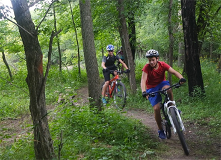
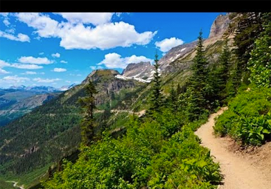

Muncak
Let's get the top of Mountain
Here is the hiking information you need to decide if it is right for you, and to make it more interesting,enjoyable, and safe
We envision a world where everyonehas permanent access to a hiking trail
Advocate
We work with Congress, Federal agencies, and partners on policy issues and legislation to ensure funding for trails, preservation of natural areas, and protection of the hiking experience.
Volunteer
Trails don't maintain themselves. Individuals of any age and experience level can become trail stewards. Give back to the trails you love, meet new people, and enjoy the experience!
Explorer
Feel confident when you set out on your next trail adventure. Check out our free hiking resources like tips for hiking with families, gear checklists, finding the best trail for you.
With the support of our members, and partners, we've improved trail access for millions of people
- We've Mobilized 558,768 Trail Volunteers
- We've Facilitated 41,146 Miles of Trail Maintenance & Construction
- Volunteers Have Contributed $108 Milion in Volunteer Labor
Protecting Trails: Current News and Issues
-

2,802 Miles of Trail to be Improved on International Trails Day
On June 2, 2018, people across the worldwill come together to collectively improve 2,802 miles of trail—the distance across the world—during International Trails Day. Muncak invites hikers,...cyclists
Read More -

Four Ways to Celebrate International Trails Day on a Bicycle
There are many ways to celebrate the International Trails Day on June 2. It’s even possible to participate on a bicycle. And if you go on a bike overnight trip during International Trails... Dayyou will simultaneously
Read More -

Millennials are the Future of our Trails
The smell of fresh dew is a welcome scent, as the crunch of my boots melds with the sound of the birds singing their morning song. It’s early and I am wearing layers, but it won’t be long until they are peeled away to adapt to the summer…
Read More